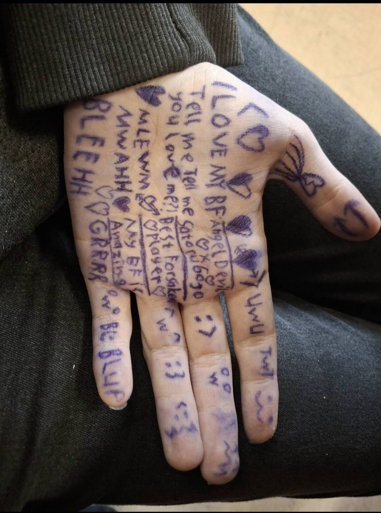
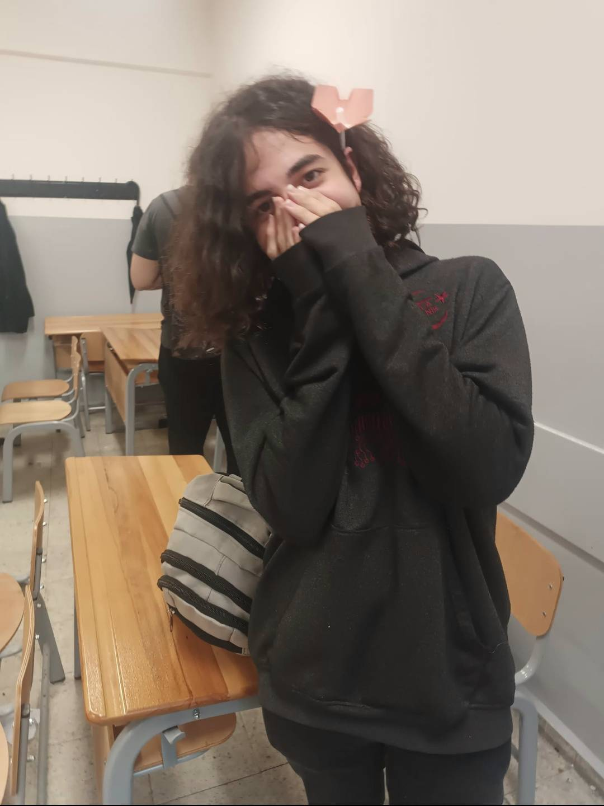

Son güncellenme: Bugün | Durum: Aktif
1.SEVGILII OLDUGUMUZDANN BERII GECEN ZAMANN
2. SENINN TATLII FOTOYAFLARIN:3
3. SANAA KARSII HISSETTIKLERIM VE BU ZAMANAA KADAY ICIMDEKILERR
WWAAWAWWAWAWWA:
Aşağı kaydırdıkça görebileceğin anı karelerimiz:


askimm ilk önce seni bulduğumda cidden acayip mutlu oldum yani hayatım boyunca senin kadar sevecen iyi tatlı ve beni önemseyen insan tek sendin sırtımı yaslayabileceğim üzgün olduğumda bile senin olduğunu bilip sevindiğim benim için elinden gelen her şeyi yapan bir meleksin adeta yani içim kıpır kıpır oluo bazen sımarıom ama ama senin sevginiii hep istiomm: